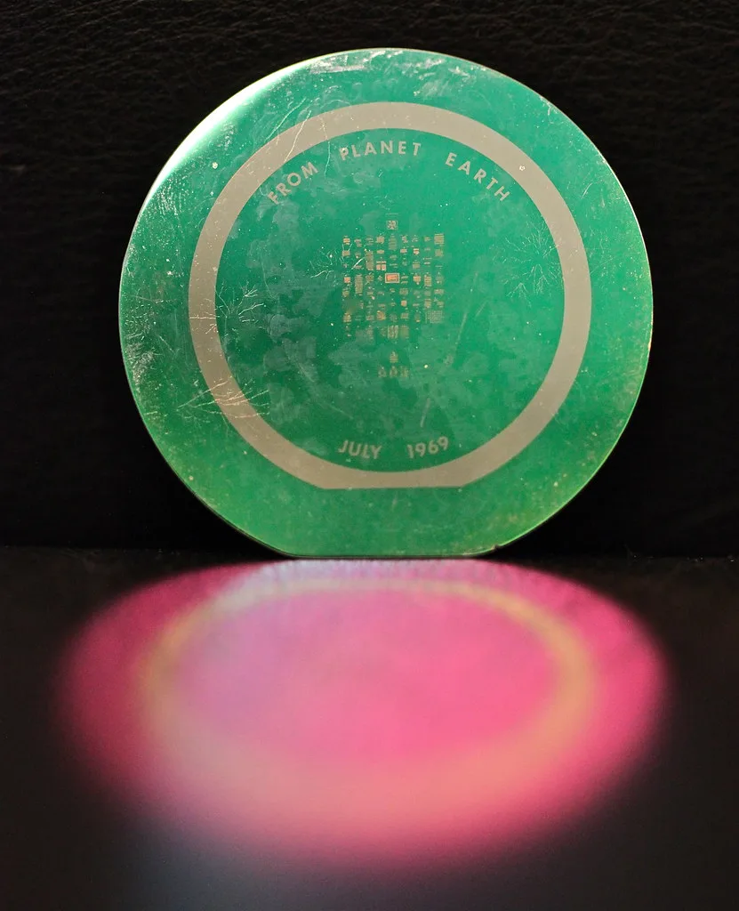
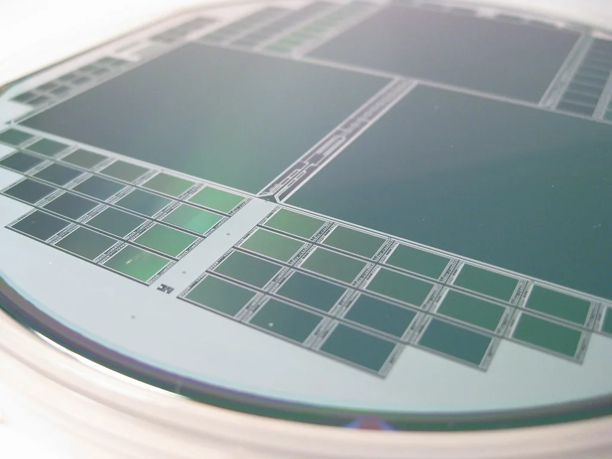

정부가 자율주행차와 로봇, 가전제품 등에 들어갈 국산 인공지능(AI) 반도체를 2030년까지 10종 개발하겠다는 청사진을 내놨다. 산업통상부는 12일 서울 포시즌스호텔에서 열린 AI반도체 M.AX 얼라이언스 하반기 총회에서 'K-온디바이스 AI반도체 기술개발 로드맵'을 발표했다. 사업 규모는 8002억원으로, 지난 6월 이미 첫발을 뗐다.
온디바이스 AI는 데이터를 멀리 떨어진 서버로 보내지 않고 기기 안에서 직접 처리하는 방식을 말한다. 통신이 끊겨도 작동하고 반응 속도가 빠르며 개인정보 유출 위험도 줄일 수 있어, 차량이나 로봇처럼 즉각적인 판단이 필요한 기기에서 쓰임새가 커지고 있다. 데이터센터용 고성능 칩과 달리 전력을 적게 쓰면서도 충분한 연산 능력을 내는 것이 핵심 과제로 꼽힌다.

개발 대상은 구체적으로 정해졌다. 자율주행차용 AI칩 1종, 스마트가전용 AI칩 3종, 협동로봇·휴머노이드·농작업로봇·무인드론용 AI칩 각 1종이 포함된다. 여기에 선단공정용과 극한환경용 반도체 설계자산(IP)을 1종씩 더해 모두 10종을 개발하고 검증한다는 계획이다. 산업 현장의 다양한 기기에 두루 쓰일 수 있도록 적용 분야를 넓게 잡았다.
일정을 앞당기는 품목도 있다. 정부는 스마트가전용 AI칩 가운데 1종의 제조 시점을 당초 계획보다 1년 이상 당기기로 했다. 가전은 국내 기업들이 세계 시장에서 강점을 가진 분야인 만큼, 먼저 성과를 내 상용화 가능성을 확인하겠다는 의도로 풀이된다. 개발된 칩이 실제 제품에 탑재되는 시점이 빨라지면 후속 개발에도 속도가 붙을 수 있다.
추진 체계도 함께 마련됐다. 산업부 차관과 김진상 경희대 총장이 공동위원장을 맡는 전략위원회가 매년 초 연차별 개발계획을 심의·확정하고 사업 진행 상황을 점검한다. 한 번 계획을 세우고 끝내는 것이 아니라 해마다 기술 흐름과 시장 상황을 반영해 방향을 조정하겠다는 취지다. 반도체는 설계부터 시제품 제작, 검증, 양산까지 수년이 걸리는 데다 그사이 시장의 요구가 빠르게 바뀌는 분야여서, 중간 점검과 궤도 수정이 가능한 구조를 갖추는 것이 중요하다는 판단으로 보인다. 개발 과정에서 나온 성과를 다음 연도 계획에 곧바로 반영할 수 있다는 점도 장점으로 꼽힌다.

이번 로드맵의 특징은 칩을 만드는 쪽과 쓰는 쪽을 처음부터 한데 묶었다는 점이다. 칩을 사용할 수요기업은 개발 초기 단계부터 참여해 시험 환경(테스트베드)을 제공하고, 파운드리는 2나노급 초미세 공정 등에서 국산 온디바이스 칩 시제품 제작을 우선 배정하기로 했다. 설계자산(IP) 기업들은 사용료 지불 조건을 유연하게 적용해 팹리스의 초기 부담을 덜어 주는 방향으로 협력한다.
업계에서는 그동안 국산 AI칩이 개발되더라도 실제 제품에 채택되지 못해 사장되는 경우가 많았다는 지적이 나왔다. 수요처와 생산 공정을 미리 확보해 두는 이번 방식이 이런 한계를 넘어설 수 있을지가 관건이다. 메모리에 비해 상대적으로 약한 시스템반도체 분야에서 실질적인 경쟁력을 쌓는 계기가 될지 주목된다. 연차별 계획이 확정되는 내년 초부터는 개발 성과와 일정이 구체적으로 드러날 것으로 보여, 로드맵이 계획대로 굴러가는지 지켜볼 필요가 있다.